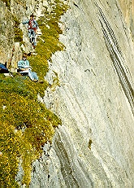

Kiener's Route is one of the most impressive climbs in the park, yet still accessible to beginning climbers with guidance. The route starts at Mills Glacier and proceeds up Lamb's Slide, then across Broadway, a narrow ledge overlooking Chasm Lake.
It continues to the summit of Longs Peak and is considered one of North America's classic climbs.
Difficulty Level: Beginner to moderate
Time: One day
Physical Stress: Moderate